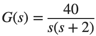
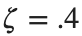
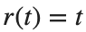
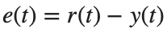
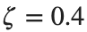

Compensator Design
실행 조건
MATLAB · Control System Toolbox
학습 목표
빠르기·감쇠·Steady-State Error를 함께 맞춰야 할 때 Lead와 Lag 중 무엇을 조정할지 판단합니다.
기준 Plant와 Lead 설계점
시작 조건

. 목표는
, rad/s입니다.진행 방법
- 목표 복소 Pole의 실수부·허수부를 계산하고 Root Locus 위에 표시하세요.
- Lead 보상기의 Zero·Pole을 정하고, 목표점의 각도 조건과 크기 조건으로 Gain을 계산해 보상기 식을 적으세요.
- 선택한 지점과 실제 Closed-loop Pole의 거리를 계산하세요.
남길 결과
- 목표점·보상 전후 Root Locus 그림과 보상기 식 1개.
s=tf('s'); G=40/(s*(s+2)); zeta=.4; wn=10;
p_desired=-zeta*wn+1i*wn*sqrt(1-zeta^2); disp(p_desired);
% TODO: 각도 조건으로 Zero·Pole을 정하고, 크기 조건으로 Gain을 계산하세요.
결과 기록·자가 점검
설계 항목 | |
목표 값 | |
계산·선택 값 | |
차이 |
확인할 점
- Pole·Zero의 좌표 부호와 보상기 계수 부호를 구분했는가?
- 격자 탐색으로 고른 Gain의 근사 오차를 기록했는가?
설계 목적을 지표로 확인
시작 조건
기준 G와 활동 1의 보상 모델에 Unit Step과 Unit Ramp를 적용합니다. 시간은 각각 0~5 s, 0~20 s입니다.
진행 방법
- 활동 1의 보상기와 보상 전 모델에 같은 Unit Step·Unit Ramp를 넣으세요. Step은 0–5 s, Ramp는 0–20 s를 사용합니다.
- Step의 Overshoot·Settling Time을 구하고, Ramp에서는

에서 출력을 뺀
를 그리세요. 각 모델의 마지막 표본 오차를 기록하세요. - Loop Transfer Function에서
 를 구해
를 구해  를 계산하고, 앞의 Ramp 마지막 오차와 절대 차이를 기록하세요. 응답 속도와 최종 오차 중 보상 전후에 개선되거나 악화된 항목을 표의 값으로 설명하세요.
를 계산하고, 앞의 Ramp 마지막 오차와 절대 차이를 기록하세요. 응답 속도와 최종 오차 중 보상 전후에 개선되거나 악화된 항목을 표의 값으로 설명하세요.
남길 결과
- Step·Ramp 그림 각 1개와 성능 표.
s=tf('s'); G=40/(s*(s+2)); t=linspace(0,20,4001)'; r=t;
% TODO: 활동 1에서 설계한 C로 feedback(C*G,1)의 Ramp 응답을 구하세요.
결과 기록·자가 점검
모델 | |
Overshoot [%] | |
Settling Time [s] | |
Kv | |
후반 Ramp 오차 |
확인할 점
- Ramp 오차가 충분히 일정해진 구간을 사용했는가?
- 보상 전후를 같은 입력과 지표로 비교했는가?
다른 목표로 설계 반복
시작 조건
같은 G에서 목표 (ζ,ωn)=(.5,8)로 바꾸거나, W12_CompensatorDesign.ipynb에서 첫 번째 ‘Phase-lag compensator using root locus’ 절(조건 ,

, 시작 코드 Kv_desired=20)의 절차를 따라 을 목표로 합니다. 둘 중 하나를 선택합니다.진행 방법
- 바꾼 목표와 고정한 Plant를 먼저 적으세요.
- 같은 형식으로 보상기와 성능 표를 새로 만드세요.
- 달성한 지표와 희생된 지표를 구분해 5문장 이내로 정리하세요.
남길 결과
- 설계안 2개 비교 표와 결과 그림.
s=tf('s'); G=40/(s*(s+2));
% TODO: 선택한 새 설계 목표를 변수로 정의하고 설계를 반복하세요.
결과 기록·자가 점검
설계안 | |
목표 | |
보상기 식 | |
달성 값 | |
함께 변한 지표 |
확인할 점
- 목표를 바꾼 뒤 예전 보상기를 그대로 결과로 쓰지 않았는가?
- 목표 미달도 실제 수치와 함께 기록했는가?